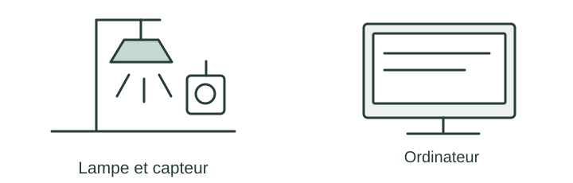

OBSERVER · EXPÉRIMENTER · EXPLIQUER
La lampe détecte la nuit
Change les informations lues par la lampe. Prévois d’abord son état sur la feuille.

✎ Garde ta feuille à côté de toi.Prévois sur papier → manipule → observe → rédige sur papier.
Des observations pour expliquer
- Q3 : teste les quatre couples avec seuil 30 et règle ET.
- Q4 : explique pourquoi il faut relire les deux entrées.
Appuie ton explication sur une valeur, un changement observé ou une comparaison. Distingue ce que montre le modèle et ce qui reste à vérifier.